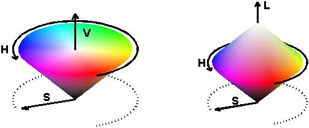
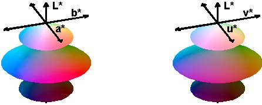

| x = |
|
, y = |
| . |

The CIE "tongue": the region of all colors over x and y (colorspace_ciedemo.m).
| colorspace | |
| by Pascal Getreuer | |
The M-file colorspace included in this package is a self-contained MATLAB function that converts color images between R'G'B', Y'PbPr, Y'CbCr, Y'UV, Y'IQ, Y'DbDr, JPEG-Y'CbCr, HSV, HSL, XYZ, CIE L*a*b* (CIELAB), CIE L*u*v* (CIELUV), and CIE L*ch (CIELCH).
B = colorspace(S,A) converts the color representation of image A where S is a string specifying the conversion. S tells the source and destination color spaces, S = 'dest<-src', or alternatively, S = 'src->dest'. Supported color spaces are
| 'RGB' | R'G'B' Red Green Blue (ITU-R BT.709 gamma-corrected) |
| 'YPbPr' | Luma (ITU-R BT.601) + Chroma |
| 'YCbCr'/'YCC' | Luma + Chroma ("digitized" version of Y'PbPr) |
| 'YUV' | NTSC PAL Y'UV Luma + Chroma |
| 'YIQ' | NTSC Y'IQ Luma + Chroma |
| 'YDbDr' | SECAM Luma + Chroma |
| 'JPEGYCbCr' | JPEG-Y'CbCr Luma + Chroma |
| 'HSV'/'HSB' | Hue Saturation Value/Brightness |
| 'HSL'/'HLS'/'HSI' | Hue Saturation Luminance/Intensity |
| 'XYZ' | CIE XYZ |
| 'Lab' | CIE L*a*b* (CIELAB) |
| 'Luv' | CIE L*u*v* (CIELUV) |
| 'Lch' | CIE L*ch (CIELCH) |
MATLAB uses two standard data formats for R'G'B': double data with intensities in the range 0 to 1, and uint8 data with integer-valued intensities from 0 to 255. As MATLAB's native datatype, double data is the natural choice, and the R'G'B' format used by colorspace. However, for memory and computational performance, some functions also operate with uint8 R'G'B'. Given uint8 R'G'B' color data, colorspace will first cast it to double R'G'B' before processing.
If A is an M×3 array, like a colormap, B will also have size M×3.
[B1,B2,B3] = colorspace(S,A) specifies separate output channels. colorspace(S,A1,A2,A3) specifies separate input channels.
Typical Usage
How does one get color image data into MATLAB?
The function imread imports most formats as a uint8 array of
size M×N×3, where the third dimension separates the R',G',
and B' color channels.
A = imread('boats.png'); % Import color data as uint8 in the range [0,255] A = double(A)/255; % Cast to double in the range [0,1] % View the image subplot(2,2,1); image(A); axis image
(For images using palette indexing, imread instead returns an array of color indices and a colormap; palette-based images require other handling.) To view a color image, use image or imshow. The image may either be a uint8 array with intensities in the range [0,255] or a double array with the range [0,1].
Once an R'G'B' array is loaded, colorspace can convert it to another color representation. To convert to Y'PbPr, for example, use
B = colorspace('YPbPr<-RGB',A);
Since the resulting array B is not in R'G'B' representation, it no longer makes sense to visualize it as a single color image, other than to convert it back to R'G'B' first. So instead, view each of the channels B(:,:,1), B(:,:,2), B(:,:,3) individually as gray-scale images:
% View the individual channels subplot(2,2,1); imagesc(B(:,:,1)); colormap(gray(256)); axis image title 'Y''' subplot(2,2,3); imagesc(B(:,:,2)); colormap(gray(256)); axis image title P_b subplot(2,2,4); imagesc(B(:,:,3)); colormap(gray(256)); axis image title P_r
To convert B back to R'G'B', use colorspace again:
ARecovered = colorspace('RGB<-YPbPr',B);
Device-independent, quantitative description of color is a surprisingly challenging problem. For example, four shades of gray surrounded by black are perceived differently than the same four shades surrounded by white [1].
| |||||
|
On black background, the lightest shade of gray seems to be almost white. But on white background, the same shade appears significantly darker. This discrepency suggests that the perceived colors on a monitor depend on the illumination of the surrounding room. Thus for precise color description, color specifications include the intended viewing conditions.
The intensity of a color is defined as the watts per unit area rendered by the display device. Another problem is that even under equal intensity, some colors are visually brighter than others.
|
To overcome this nonuniformity, many color spaces instead consider luminance, a quantitative estimate of the perceived brightness.
Different color representations try to overcome these problems, with varying degrees of success. It is for this reason that there are so many standard color representations.
CRT monitors have a nonlinear relationship between the input voltages and the rendered intensities. To reproduce an image accurately, the image is gamma-corrected in such a way that the monitor displays the desired intesities.
The ITU-R Recommendation BT.709 transfer function defines gamma-compensated values R',G',B' from R,G,B:
| R' = 1.099 R0.45 − 0.099, | if R > 0.018 |
| R' = 4.5138 R, | if R ≤ 0.018 |
and similarly for G' and B' [1]. Standard notation denotes R',G',B' quantities and derived quantities with a prime ' to signify gamma-correction. Since gamma-correction is already applied by the camera as standard practice, most digital image data should be interpreted as R'G'B', and not RGB.
The luma of a color is an estimate of brightness based on gamma-corrected samples. Its definition (ITU-R Recommendation BT.601-4) is
Y'601 = 0.299 R' + 0.587 G' + 0.114 B'.
This luma measure is (up to a scale factor) the Y' in Y'PbPr, Y'CbCr, JPEG-Y'CbCr, Y'UV, Y'IQ, and Y'DbDr. The remaining two components in each of these representations capture the chroma, the part of a color independent of luma [2].
Y'PbPr
Given R', G', and B' in the range [0,1],
the Y'PbPr components are
| = |
| × |
|
with Y' in [0,1] and Pb, Pr in [−0.5,0.5].
Y'CbCr
Y'CbCr, also called YCC, is a rescaling of
Y'PbPr such that component can be stored as
8-bit unsigned values. Given R', G', and B' in the range [0,1],
| = |
| + |
| × |
|
with Y' in [16,235] and Cb, Cr in [16,240].
JPEG-Y'CbCr
JPEG-Y'CbCr is another rescaling of
Y'PbPr, used in the JPEG image format, such
that components take the full unsigned 8-bit range [0,255]:
| = |
| + 255 |
| × |
|
with Y', Cb, Cr in [0,255].
The Hue Saturation Value/Brightness (HSV/HSB) is an intuitive color system, measuring the hue of a color as the angle on the HSV color wheel, the saturation as the color's vibrancy, and the color's value or approximate brightness. There is no simple expression of HSV in terms of R'G'B'; the transform is a nonlinear algorithm.

Conic representation of the HSV and HSL color spaces
(colorspace_demo.m).
The Hue Saturation Lightness (HSL or HLS) color space, also called Hue Saturation Intensity (HSI), has the same definition for color hue as HSV. The other two components differ such that all colors tend to white as lightness increases.
The HSV and HSL systems are ambiguous on whether components should be based on RGB or gamma-corrected R'G'B', and specify no white point. When truly device-independent color reproduction is necessary, it is better to use a CIE color space [2].
In 1931, the Commission Internationale de L'Éclairage (CIE) defined a standard color system for precise color reproduction called XYZ. The XYZ color space has a linear relationship with non-gamma-corrected RGB [2]:
| = |
| × |
|
The closely-related xyY space defines the chromaticity coordinates,
|
The CIE "tongue": the region of all colors over x and y (colorspace_ciedemo.m). |
XYZ is the foundation of the L*a*b* (CIELAB), L*u*v* (CIELUV), and L*ch color spaces. Let Xn,Yn,Zn be the XYZ values of a reference white point. The white point in colorspace is the standard D65 white point, Xn = 0.950456, Yn = 1, Zn = 1.088754. The lightness, denoted by L* in each of these spaces, is defined as
| L* = 116 (Y/Yn)1/3 − 16, | if Y/Yn > 0.008856 |
| L* = (Y/Yn − 4/29) 108/841, | if Y/Yn ≤ 0.008856 |
The white point has lightness 100, and provided 0 ≤ Y ≤ Yn, L* is in the range [0,100].
The other two components in each representation describe the chromaticity. L*a*b* and L*u*v* both attempt to "perceptually linearize" chromaticity, meaning that changes in color values correspond to proportional changes in visual importance. L*ch is L*a*b* with chromaticity expressed in polar coordinates.

Visualizations of the L*a*b* and L*u*v* color spaces
(colorspace_demo.m).
To verify the invertibility of the color transformations, this test converts R'G'B' data to a space, inverts, and compares with the original data.
N = 1e4; % Number of points to test A = rand(N,1,3); % Generate points in R'G'B' colorspace Space = {'YPbPr','YCbCr','YDbDr','JPEG-YCbCr','YIQ','YUV',... 'HSV','HSL','XYZ','Lab','Luv','Lch'}; fprintf('\n Conversion Max Error\n\n'); for k = 1:length(Space) B = colorspace([Space{k},'<-RGB'],A); % Convert to Space{k} R = colorspace(['RGB<-',Space{k}],B); % Convert back to R'G'B' MaxError = max(abs(A(:) - R(:))); fprintf(' RGB<->%-10s %.2e\n',Space{k},MaxError); end
Conversion Max Error RGB<->YPbPr 4.72e-016 RGB<->YCbCr 7.77e-016 RGB<->YDbDr 4.44e-016 RGB<->JPEG-YCbCr 5.55e-016 RGB<->YIQ 5.55e-016 RGB<->YUV 4.08e-016 RGB<->HSV 1.28e-015 RGB<->HSL 1.33e-015 RGB<->XYZ 2.68e-015 RGB<->Lab 4.97e-015 RGB<->Luv 8.19e-015 RGB<->Lch 6.84e-015
Indeed, conversions are accurate to machine precision. The first six spaces, being linearly-related to R'G'B', have lower conversion errors than the other nonlinearly-related spaces.
| [1] C. Poynton. "Frequently Asked Questions about Gamma." 1998. |
| [2] C. Poynton. "Frequently Asked Questions about Color." 1997. |
| [3] J. Burkardt. "COLORS - Color Coordinate Conversion." (FORTRAN code.) 2002. |